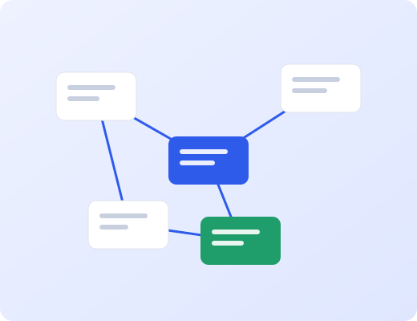

Capture quickly
Jot down a thought in a second. Lumen files it where it belongs and keeps it searchable.
Now in public beta
Lumen keeps your ideas connected. Write, link and revisit, and let structure appear on its own.

Jot down a thought in a second. Lumen files it where it belongs and keeps it searchable.
Mention a note and the link is made. Backlinks show you what connects to what.
A daily digest surfaces the notes that matter today, so nothing important is lost.
Yes. The free plan includes unlimited notes on one device and seven days of history.
Every note can be exported as Markdown at any time, individually or as a full archive.
Lumen is offline first. Changes sync when you are back online, with no merge conflicts.